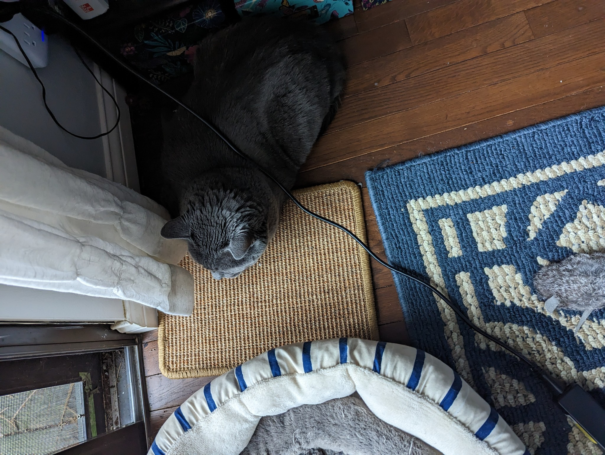

It is shameful that we live in a world where images like this are commonplace.

The IUCN Red List currently lists the chipmunk as a Least Concern species, and its range covers nearly half of the United States. There are currently no widespread efforts underway to work on this crisis, or to help eliminate the several other nuisance species like birds, squirrels, and deer, which have similarly become a sadly omnipresent sight blighting the pristine natural world.
It is Theodosia's life goal to put an end to these prey animals once and for all. While she would prefer that each and every one die by her own claws, decades of inaction have made this infeasable. She would greatly appreciate any support in this endeavor, whether it takes the form of killing directly or helping facilitate other creatures in their hunt. She would be happy to answer any inquiries on honing one's predatory instincts.
